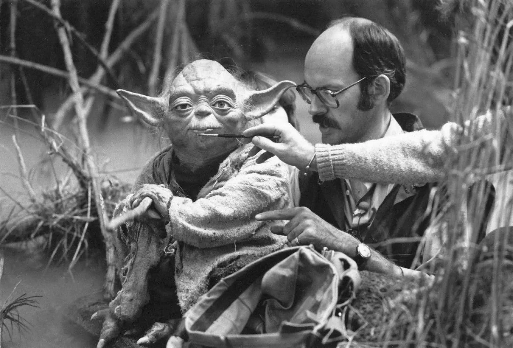

Book

Star wars: the hidden side of the saga
To all of you, movie lovers and Star Wars anecdotes lovers, this book is for you! Star Wars the hidden side of the saga is a book gathering many stories about the production of the first two trilogies of the Star Wars saga of George Lucas.
Global success
In October 1977, the first episode of Star Wars was released in theaters. It is very well received and immediately finds an audience of fans, surprisingly large for its time. The film beats all records at the box office. George Lucas succeeded in revolutionizing the world of special effects in intergalactic battles. He will innovate in the market of derivative products, which leads and maintains the creation of communities around his universe. These same derivative products also allow the saga to reach another level of worldwide recognition. Here are a few anecdotes that you can find in the book.
Qui-Gon Jinn is Too Tall.
In Episode 1, Qui-Gon Jinn's actor, Liam Neeson, discovers the sets for his fight scene with Darth Maul. The sets were designed for people of average height. But Neeson, from the top of his 1m93, had to bend down to go under the ceiling. The sets had to be modified in a hurry to suit his imposing physique.
Actors Ewan McGregor and Liam Neeson
Yoda is difficult to handle !
Unlike Jar Jar Binks, or Sebulba, Yoda is not created virtually. It is a puppet that is on the set. It takes no less than 4 operators at the same time to manipulate all the parts of his body and make the creature realistic. The head and his left hand are operated by Frank Oz, a renowned puppeteer, who made the puppet himself.
The puppeteers around Yoda
A Darth Vader with 5 heads !
The character Darth Vader has known many interpreters, 5 in total. Hayden Christensen, is the first role of the great villain since he also plays Anakin Skywalker. The special voice is done by James Earl Jones. In most of the films, it is David Prowse who is in the costume, except for the fight scenes, which are interpreted by the stuntman Bob Anderson and the revelation of the mask in episode 6, by Sebastian Shaw.
Extract:
No break for R2-D2
Inspired by Kurosawa, the genius Japanese director, George Lucas has the intelligence to narrate the adventures of Luke Skywalker from the point of view of two robots, R2-D2 and C-3PO. It is the droid R2-D2 who has the preference of the fans. To give a human dimension to this strange automaton, Lucas hired Kenny Baker, a small actor, who is not at his first role.
Kenny Baker was 42 years old when Lucas offered him the role of R2-D2. Since the age of 16, the actor has been working in the world of entertainment: DJ, circus clown, pantomime actor, the man has done it all, even put on his own show. So Baker is not a beginner. And it took a certain amount of talent, patience and humor to "take on" the role of the famous robot.
Then they'd say, 'Cut ! Do a lunch break.' And everyone would walk away and leave me. That happened several times.
Kenny Baker
The 96-centimeter white and blue astro-droid is emblematic of the Star Wars universe. Always ready for a new mission, he's unobtrusive and courageous enough to do whatever he's asked to do. Equipped with all sorts of technical innovations (telescopic arm, retrorockets, holographic projectors, integrated reactors), he helps Padmé Amidala, Anakin Skywalker, Obi-Wan Kenobi, Luke and Leia.
His language is encrypted, so he must make himself understood through strange whistles that are rarely intelligible. His sidekick C-3PO is often the interpreter, but he is also understood by Luke and Anakin Skywalker.
Present in the six films of the saga, just like his companion C-3PO, R2-D2 has won the heart of the public and that of his interpreter ... for whom the first shooting remains a trying memory. The first shots in Tunisia, grueling for the whole team, proved even more difficult for Kenny Baker who, buried in his robot suit, suffocated for hours when the rest of the team was resting. Indeed, during the breaks, the other actors had the bad habit of forgetting to warn Baker, who could not extricate himself from his cumbersome machine!